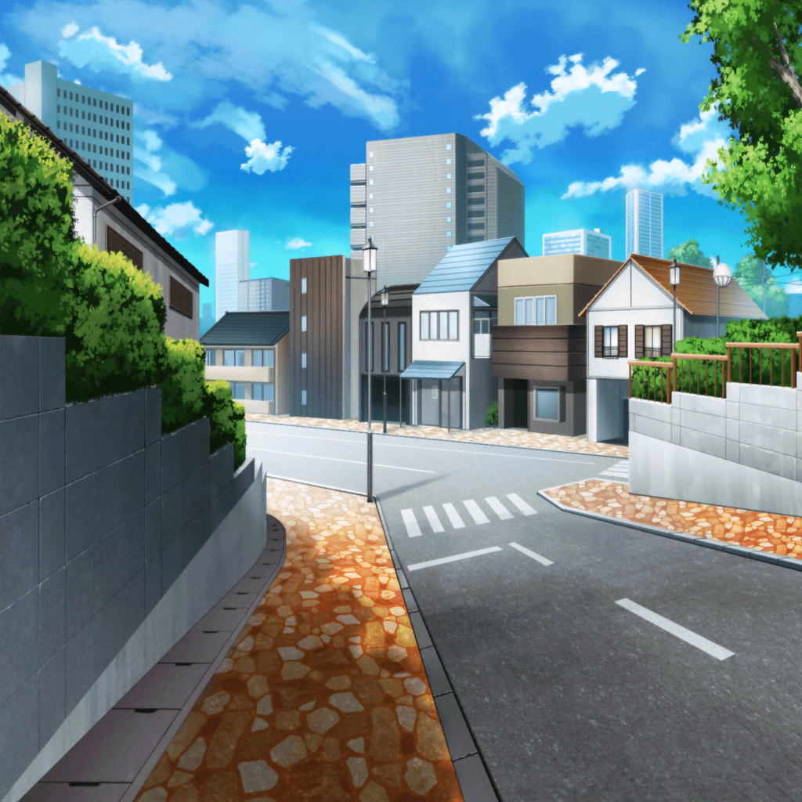
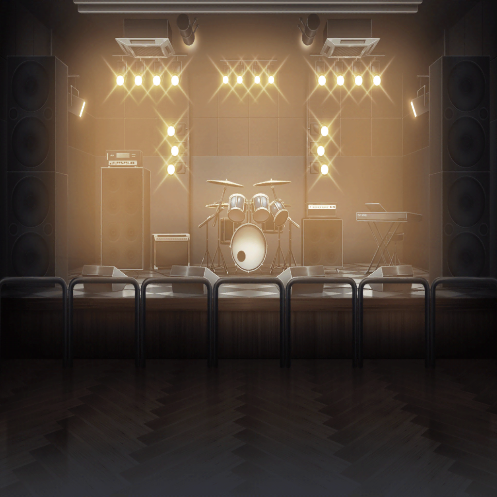
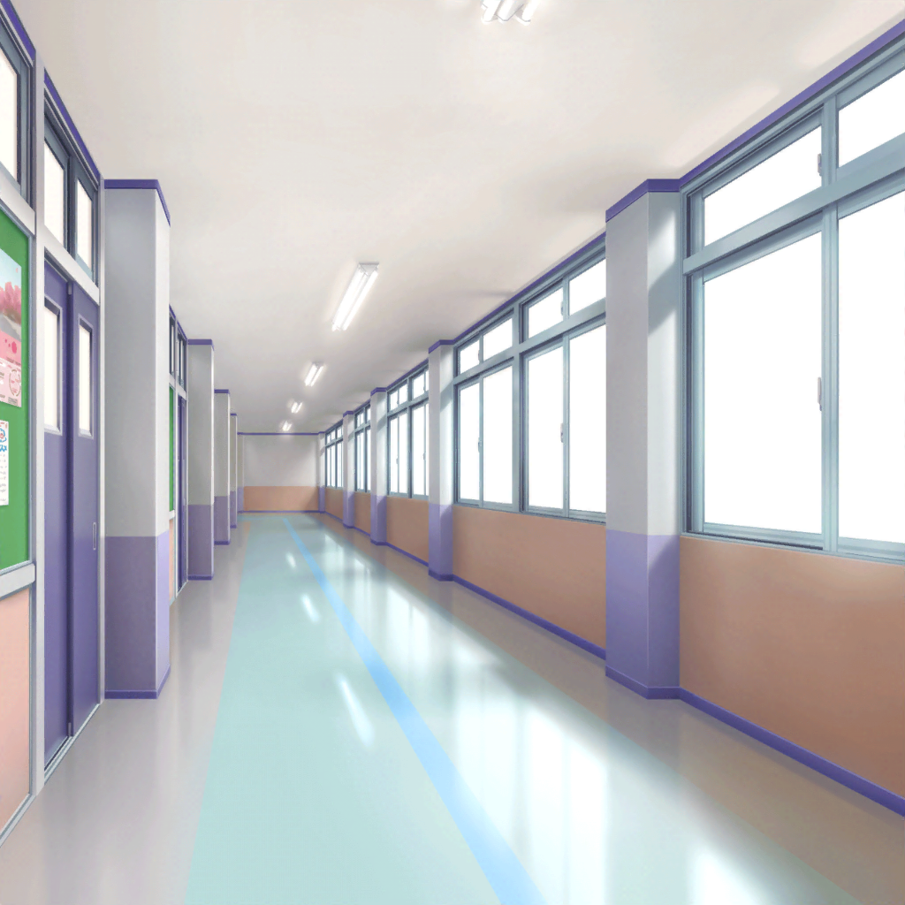
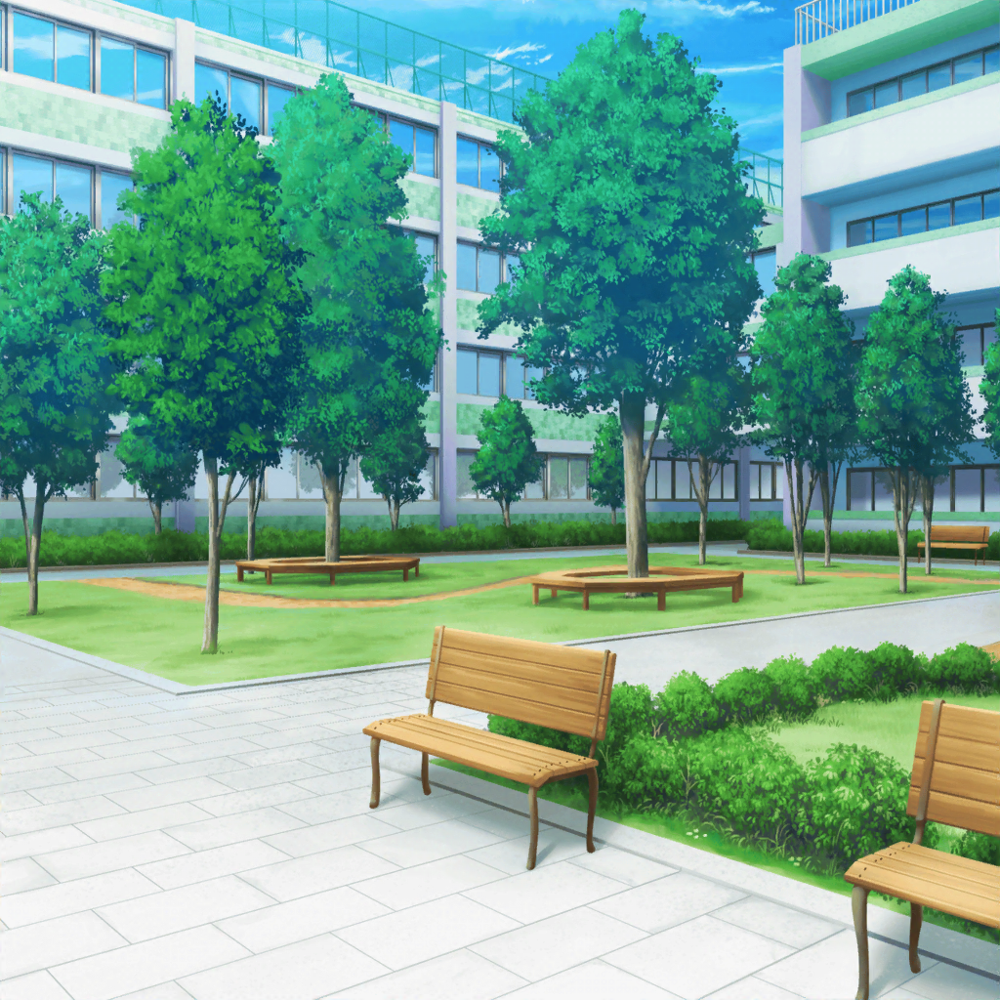

住宅街
香澄
有咲、待って〜、市ヶ谷さん！
有咲
市ヶ谷じゃない！ ついてくんな！
有咲
てか、なんなの？
朝から人んちに押しかけて来て！
有咲
つーか、部屋にまで入ってくるとか、
マジありえないんだけど！
香澄
だって、一緒に学校に行こうと思っておうちに行ったら、
まだ寝てるから起こしてきて〜っておばあちゃんが
有咲
ばあちゃんが許可しても、私は許可してねえ！
有咲
つーか、有咲って……！
なんで私の名前知ってんだよ！
香澄
おばあちゃんがそう呼んでたから！
有咲って言うんだよね！ 有咲っ♪
有咲
ばあちゃんの仕業か……
それでなんなんだよ？ 何しにきたわけ？
香澄
昨日の話の続き！

香澄
……バンド！
香澄
すごいキラキラ！
バンドバンド、バンドやろう！
有咲
はあ！？ やらねーし！
香澄
あ、待って……
りみ
きゃっ！
有咲
！ すみません……！
りみ
市ヶ谷……さん？
香澄
市ヶ谷……？
有咲
……！
返して、ギター！
香澄
えっ、あ、待ってよ〜！
えっと、市ヶ谷さん！
香澄
すぐ追っかけたけど、暗くてシール見えなくて
有咲
シール？
香澄
うん。あ、ほら見て。
ここにも貼ってある、星のシール
有咲
そのシール……はっ、今だ！
香澄
……あれ、有咲？
えっ、なんで急に猛ダッシュ！？
ちょ、ちょっと置いてかないで〜！

花咲川女子学園 廊下
香澄
有咲！
有咲
うわあ！
香澄
行くなら行くって言ってよ、探しちゃった！
有咲
……失礼
香澄
えっ……って、えーー！！
またダッシュ！？ 有咲、待って……！
沙綾
何してるの？
市ヶ谷さんと知り合い？
香澄
あ、さーや！
えっ、有咲のこと知ってるの？
沙綾
知ってるっていうか、ある意味有名だから。
中１から成績は学年トップだけど、全然学校に来ないって
香澄
そ、そうなんだ。
実は昨日……
沙綾
へえ、そんなことがあったんだ
香澄
うん、バンドやるんだ！
香澄
ライブハウス行ったら、すっごくキラキラで！
ドキドキして！
香澄
さーやもやる？
放課後ダメだったら休み時間に！
沙綾
私はいいよ。
香澄、見つけたんだ、キラキラドキドキするもの
沙綾
応援する！
香澄
ありがとー、さーや！
よーし、絶対有咲とバンドやるぞ〜！
昼休み
香澄
うう、どうしたんだろ、有咲。
教室に行ったら、早退したっていうし……
具合悪いのかな〜
香澄
……あれ？ 自販機の前にいるあの子って……
りみ
うーん、どれにしようかな……
香澄
どれにすんの？
りみ
ひゃあ！
ああっ、ええと……
香澄
牛込さん、昨日いたよね！
バンドやってるの？ いつからやってるの？
何弾くの？ 歌？ ライブいつ？
りみ
ちゃう！
あっ！ じゃなくて、あのっ！
香澄
関西弁！ かわいい！
りみ
中学の時、こっち来て……
はあ、気を抜くと出ちゃう……
香澄
かわいいからいいよ！
でも、そっか、やってないかー……
りみ
お姉ちゃんが……
グリグリ、Glitter*Greenのギターなんだ
香澄
すごい！ お姉さんすごいカッコよかった！
りみ
うん！
香澄
すっごいキラキラしてた！
りみ
うん……！
香澄
ライブやりたいよー！
りみ
うん……
香澄
わあ！ やろー！
りみ
……え？

花咲川女子学園 中庭
沙綾
バンドやるんだ、牛込さん
香澄
りみりんすごいんだよ！
……なんだっけ？
りみ
ベース？
香澄
ベースができる！
りみ
ちょっとだけだよ〜……
香澄
ちょっとでもすごいよ！
沙綾
……牛込さん。
嫌なら断っていいんだよ？
香澄
ひどい〜！
りみりん……！
りみ
嫌や、嫌じゃないよ。
戸山さんが誘ってくれて、私……
香澄
りみり〜ん！ 香澄でいいよぉ〜！
……で、ベースって？
りみ
え？
沙綾
さっき教えてくれた星のギター……だっけ？
スマホで調べてみたけど、この中にある？
香澄
えっとね……あっ、これ！
ランダムスター……っていうんだ
沙綾
へぇ、刺さりそう
香澄
ね、りみりん！
バンド初めてなんだ。弾き方とかコツとかいろいろ教えて！
りみ
教えるなんて……
あの、香澄ちゃん……
香澄
はい、先生！
りみ
えっ！？
や、やめて香澄ちゃん〜！